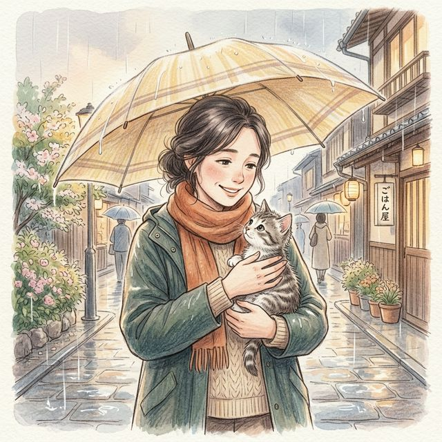
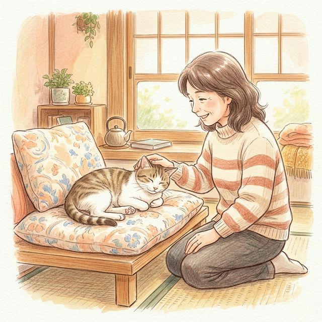
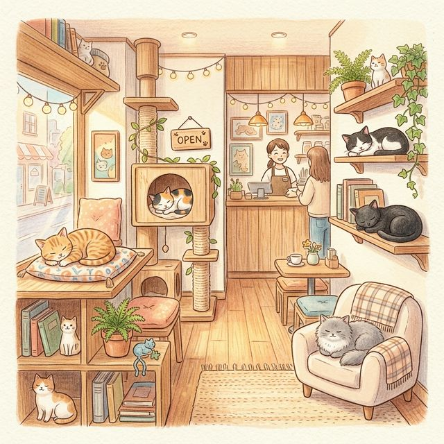
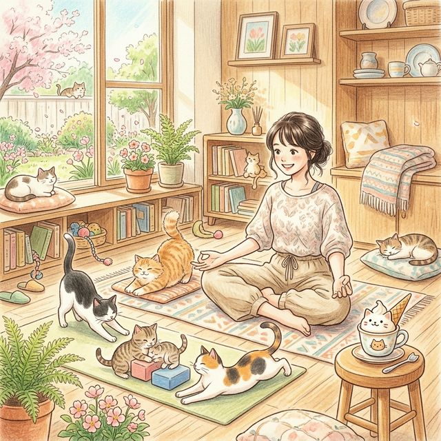

保護猫活動を始めて、約17年。
すべては、雨の日に出会った一匹の子猫から始まりました。

一般的な保護活動では、TNR（捕獲・不妊去勢・元の場所に戻す）という方法が広く行われています。私自身も活動初期には取り組んだことがありますが、どうしても「元の場所に戻す（Return）」という選択ができませんでした。
一度出会ってしまった命を、元の厳しい環境に戻すことができず、結果として自宅で引き受ける形になる——それが自分の性格であり、限界でもあると気づきました。
それ以来、私はTNRではなく、「預かり」という形で命を守る活動を続けています。

活動を始めて間もない頃、偶然、下半身不随の猫を保護したことがありました。
圧迫排尿を学び、日々のケアを続ける中で、「この子たちを支えることこそ、自分にできる役割なのではないか」と強く感じるようになりました。
それからは、
そういった、行き場を失いやすい猫たちを中心に預かる活動へと、自然に形が変わっていきました。
しかしその一方で、SNS上では
という心ない言葉を向けられたこともあります。
長い間誹謗中傷が続き、深く傷つき、すべてをやめてしまいたいと思ったこともありました。
それでも、ブログを通じて出会った方々や友人、仲間たちの温かい言葉に支えられ、ここまで活動を続けることができました。

お店が誕生したきっかけは、コロナ禍でした。
それまで個人ブログを通して多くの方に支えられてきましたが、コロナの影響でご支援が大きく減少し、猫たちの生活を維持することが難しくなっていきました。
このままでは多頭崩壊になってしまう——そう感じた私は、初めてクラウドファンディングに挑戦しました。
そして多くの方のご支援により、2021年11月22日（猫の日）に「譲渡型保護猫カフェ ぷここん家」をオープンすることができました。
猫たちの人懐っこさにも支えられ、多くのお客様にご来店いただきながら、4年間続けてくることができました。
しかし、保護猫たち特有のトイレ問題などにより、店内の環境面での課題（特に臭いの問題）も抱えるようになりました。
本来であればすぐに改善すべきことでしたが、経営的には決して余裕がある状態ではなく、簡単には手を入れられない状況が続いていました。
それでも「猫たちのために、より良い環境を整えたい」という思いから、再びクラウドファンディングに挑戦させていただきました。
その結果、再び多くの方に支えていただき、2026年1月3日、無事にリニューアルオープンすることができました。

現在は、
など、新しい取り組みも取り入れながら、「無理なく続けられる保護活動の形」を模索しています。
保護猫活動は、理想だけでは続きません。
だからこそ、現実と向き合いながら、
人と猫が共に心地よく過ごせる場所を
作り続けていきたいと考えています。
これからも「ぷここん家」は、
行き場のない猫たちにとっての居場所であり、
訪れてくださる方にとっても、
心が少し軽くなるような場所でありたいと思っています。